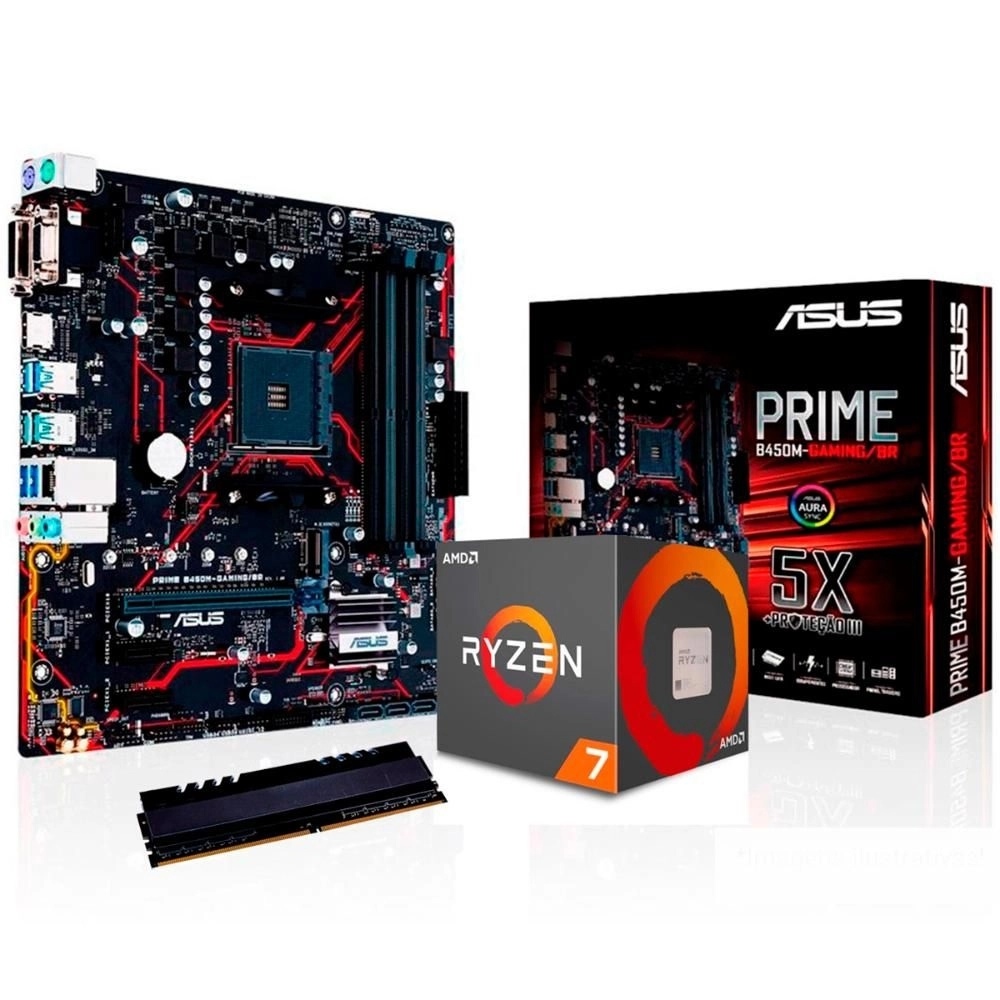
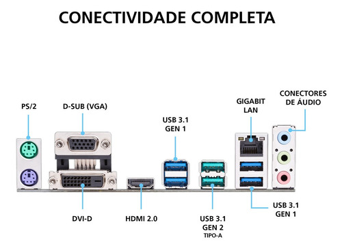
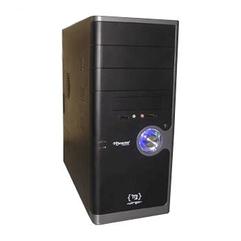

Kit Upgrade para 2021 - peças de qualidade
Monta seu Computador até 2 horas.


Kit Upgrade: AMD Ryzen 5 2600 6-Core 3.4 GHz + Asus PRIME B450M GAMING/BR + Memória 8GB DDR4
Especificações técnicas:
PLACA MÃE ASUS PRIME B450M GAMING/BR
Placa mãe para processadores AMD Socket AM4 AMD Ryzen 2ª Geração/Ryzen com Radeon Vega Graphics/Ryzen 1ª Geração;
Chipset: Processadores AMD B450;
Memória Processadores AMD Ryzen 2ª Geração/ Ryzen com Radeon Vega Graphics/ Athlon com Radeon Vega Graphics/
Ryzen 1ª Geração, Memória 4 x DIMM, máximo de 64GB, DDR4 3466(O.C.)/3200(O.C.)/3000(O.C.)/2800(O.C.)/2666/2400/2133 MHz
Un-buffered, Arquitetura de memória: Dual Channel, O Suporte a ECC Memory (modo ECC) varia de acordo com a CPU;
Gráficos Integrados nos Processadores AMD Ryzen™ com Radeon™ Vega Graphics/ Athlon™ com Radeon™ Vega Graphics,
múltiplas saídas de vídeo: portas HDMI/DVI-D/D-Sub (VGA), Suporta DVI-D com resolução máxima de 1920 x 1200 @ 60 Hz,
suporta HDMI 2.0b com resolução máxima de 4096 x 2160 @ 60 Hz, Suporta D-sub com resolução máxima de 1920 x 1200 @ 60 Hz;
Slots de expansão: Processadores AMD Ryzen™ 2ª Geração/ Processadores Ryzen 1ª Geração 1 x PCIe 3.0/2.0 x16 (modo x16),
Processador AMD Ryzen com Radeon™ Vega Graphics 1 x PCIe 3.0 x16 (modo x8) *1, Processadores AMD Athlon com
Radeon™ Vega Graphics 1 x PCIe 3.0/2.0 x16 (max at x4 mode), Chipset AMD B450 2 x PCIe 2.0 x1;
LAN: 1 x Gigabit LAN Realtek RTL8111H, 1 x Gigabit LAN ASUS LAN Guard; Áudio: Realtek ALC887 com
8 canais - CODEC de alta definição, Recursos de áudio: Proteção de Áudio: Garante precisão na separação
analógica/digital e reduz a maioria das interferências multi-laterais, Camadas de áudio PCB dedicadas:
Camadas separadas para o canal direito e esquerdo para proteger a qualidade dos sinais sensíveis de áudio,
Design iluminado por LED - Ilumine a sua construção com caminhos de áudio iluminados, Capacitores de áudio premium japoneses:
fornecem som natural e imersivo com clareza e fidelidade excepcionais.
R$ 511,90
Consulte o site www.asus.com para a lista de CPUs AMD compatíveis.
Manual da placa-mãe:
https://dlcdnets.asus.com/pub/ASUS/mb/SocketAM4/PRIME_B450M-GAMING_BR/BP14923_PRIME_B450M-GAMING_BR_UM_WEB.PDF
Sistema Operacional
Windows® 10 64-bit
Windows® 7 64-bit *3
Notas:
1* Suporte NVMe PCIe RAID.
2* O M.2 Socket compartilha a largura de banda com as portas SATA_5/6 e, portanto, as portas SATA_5/6 não podem ser usadas quando um dispositivo M.2 está instalado.
3* Instale um Processador AMD Ryzen™ de 2ª Geração ou Ryzen™ de 1ª Geração para suportar o sistema operacional Windows 7 de 64 bits.
https://www.asus.com/br/Motherboards-Components/Motherboards/PRIME/PRIME-B450M-GAMING-BR/
Quais são os Ryzen 2 geração?
Os modelos da segunda geração foram os Ryzen 5 2600, Ryzen 5 2600X com 6 núcleos e 12 threads de processamento e os modelos mais avançados Ryzen 7 2700 e Ryzen 7 2700X.
PROCESSADOR
AMD / Ryzen 5 2600 (YD2600BBAFBOX)
Processador AMD Ryzen 5 2600 6-Core 3.4 GHz (3.9 GHz Turbo) Socket AM4 65W; 16MB L3 Cache, 3MB L2 Cache.
R$ 899,00
Data de lançamento: 04/19/2018
*Suporte de SO:
Edição Windows 10 - 64-Bit
RHEL x86 64-Bit
Ubuntu x86 64-Bit
*O suporte ao sistema operacional (SO) poderá variar de acordo com o fabricante.
https://www.amd.com/pt/products/cpu/amd-ryzen-5-2600
A tabela mostra os CPUs suportados por esta placa-mãe
Vai na aba Suporte CPU / Memória e busca por "Ryzen 5 2600"
MEMÓRIA RAM:
Markvision MVD48192MLD-26
Memória de 8GB DDR4 2666MHz.
R$ 250,00
Fonte de alimentação:
Corsair CX550M (CP-9020102-WW)
Fonte de alimentação de 550W de potência real.
Certificação: 80 PLUS Bronze.
Compatibilidade: ATX12V 2.4 / 2.3 / 2.2 / 2.01 e EPS12V 2.92;
Voltagem de Entrada: AC 100V - 240V.
Potência Fornecida: 550 Watt. MTBF: 100.000 hora(s);
Sistema de Refrigeração: Ventilador 120 mm;
Conectores de Saída de Energia:
1x Conector ATX,
1x Conector EPS,
1x Conector de disquete,
4x Conectores de periférico com quatro pinos,
2x Conectores PCI,
5x Conectores SATA.
R$ 564,99
--------------------------------------------------------------
Total do hardware:
R$: 2225,89
--------------------------------------------------------------
Complemento:
Se trocar o HD por SSD (questão de velocidade)
Seagate ZP500CV30001
(SSD) Solid State Drive interno Seagate Barracuda Q5 de 500GB PCIe Gen3 ×4 NVMe 1.3, M.2 2280-S2
R$ 618,40
ou
Seagate STJM1000400
(SSD) Solid State Drive externo Seagate Barracuda Fast 1TB; interface: USB-C, Velocidades de transferência de até 540 MB / s.
R$ 1.650,00
Gabinete (alto poder de performance)
Fabricante: Corsair, Cooler Master, Aerocool ou Maxxtro
Tipo: ATX
Verificar o número de portas e conexões disponíveis no produto
Refrigeração (melhor circulação de ar):
Gabinete grande e espaçoso
Fazer instalação de 2 fan de 12 cm ou 80 cm (na parte da frente e trazeira)
Modelos:
Cooler Master Cosmos II
Cooler Master Cosmos C700M
Corsair Carbide SPEC-OMEGA
Corsair Crystal 680X RGB
Corsair Obsidian 500D
Corsair Carbide Series Spec Delta
Corsair Carbide Series 275R
Corsair 275R
Cooler Master Silencio S600
Cooler Master HAF X
Modelo básico: MAXXTRO VIRGO 3331CA PRETO

Placa de vídeo da NVIDIA
Obs.: O recomendado é usar a fonte de alimentação que a própria NVIDIA recomenda.
No site da NVIDIA localiza "Required System Power (W)" ou "Fonte recomendada (W)"
para o modelo do produto geralmente fica em "VER ESPECIFICAÇÕES COMPLETAS".
As recomendações são baseadas em um PC configurado com um processador Intel Core i7 3.2 GHz.
Um sistema pré-criado pode exigir menos energia, dependendo da configuração do sistema.
NVIDIA
Exemplo:
Gainward / GeForce GTX 1650 D6 Ghost 4GB GDDR6 (471056224-1808)
GeForce GTX 1650 4GB GDDR6 (128 bits);
Velocidade do clock de GPU 1590 MHz (Boost);
Velocidade do clock da memória: 6000Mhz (12Gbps);
Largura da Banda: 192 GB/s;
Barramento: PCI-Express 3.0 x 16;
Refrigeração: 2 Slot Dual Fan Cooler;
Interface: 2 DisplayPort + 1 HDMI V2.0
R$ 2.128,40
Geralmente usa uma fonte de alimentação (Corsair) de potência real de 750W
ou superior no padrão ATX com PFC ativo.
- PFC ativo (correção de fator de potência) com valor de 0,99 PF, para garantir energia limpa e confiável.
- Eficiência com certificado 80 PLUS Bronze, fornecendo 82% de eficiência em energia em condições de carga do mundo real.
https://www.atera.com.br/produto/cx750/Fonte+ATX+750W+reais+Corsair+CX750+CP-9020123-WW+80Plus
--------------------------------------------------------------
Preços para segunda-feira, 13 setembro 2021 00:59
Preços e Formas de Pagamento do hardware:
- À Vista em dinheiro (Em espécie).
- Transferência bancária.
- Cartões de crédito e débito.
Voltar
|